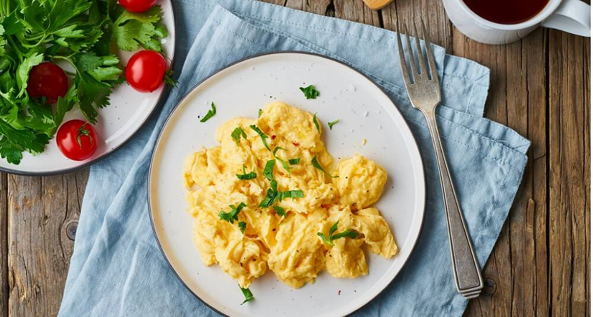

Scrambled eggs

Can't fit a whole egg in your mouth? Try beating it into submission for maximum egg eating efficiency!
Ingredients
- 6 eggs
- 6 tbs water
- 0,5 tbs salt
- 0,25 tbs black pepper
- 1 tbs butter for your pan
- 2 tbs chopped fresh chives
Cook it:
- Break eggs into a bowl, whisk together with water, salt and pepper
- Melt butter in a pan at medium heat, pour egg mixture when the butter stops complaining
- Push egg mixture toward the middle of the pan as it hardens
- Turn heat off and let the eggs finish cooking. They will continue to cook/harden after you take it off the stove, so make sure not to overcook them
- Sprinkle with finely chopped chives
If you really feel like you need to, you may plop a big knob of butter into the pan and cook until brown, then pour it into the poor egg mix before cooking. Tastes good, but at what cost?
Go home